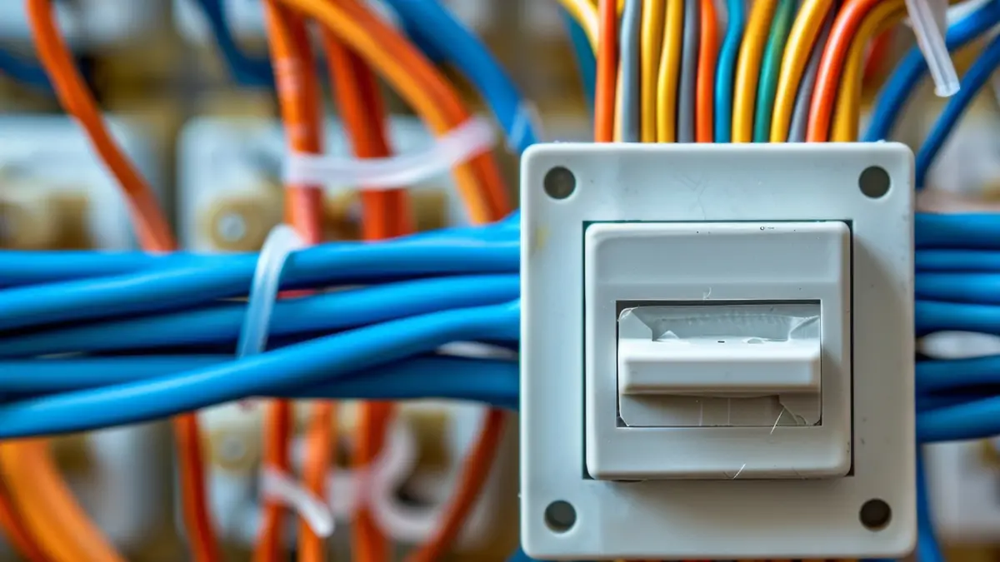

In short
I carry out electrical work for commercial and industrial premises across the area: fire alarm systems with a proper control panel, emergency lighting, PAT testing, inspection and testing, new installations, repairs, CCTV, data cabling and maintenance contracts. I'm DBS checked, so I can work in schools, care homes and similar settings, and you get the right certificates for every job.
Who I work with
- Shops and retail units
- Offices and workshops
- Cafés, restaurants and pubs
- Hotels, B&Bs, guest houses and holiday lets
- Schools, care homes and other settings where DBS-checked staff are required
- Factories, industrial sites and premises with larger machinery
- Letting agents and landlords
What I can help with
- Fire alarm systems: installation, testing and maintenance of systems with a proper control panel.
- Emergency lighting: installation, testing and certification.
- PAT testing: portable appliance testing for offices, shops, workshops and rental properties.
- Inspection and testing: periodic inspection (EICR) of business premises, for letting agents as well as individual owners.
- Installations and alterations: new circuits, sockets, distribution boards and fit-outs.
- Lighting: LED upgrades and display lighting.
- Data and CCTV: hardwired data cabling, and CCTV installation and repair.
- Industrial and maintenance: larger machinery, and maintenance contracts for factories and bigger sites.
- Fault finding and repairs: see emergency electrician.

Keeping your business running
Downtime costs money, so I'll plan the work around when you're open and agree timings with you in advance. For urgent faults, call me and I'll tell you straight away when I can get to you.
Electrical safety for business premises
Employers and building owners have a legal duty to keep electrical systems safe under the Electricity at Work Regulations 1989. For most shops and offices, a periodic inspection every five years is the usual interval, and sooner for premises with heavy use or harsh conditions. Fire safety law also expects suitable fire detection and emergency escape lighting where your risk assessment calls for it, and I can advise on what that means for your premises.
Common questions about commercial electrical work
Do you do fire alarm and emergency lighting work?
Yes. I install, test and maintain fire alarm systems with a proper control panel, and emergency lighting. Tell me about your premises and I'll advise on what's needed.
Are you DBS checked?
Yes. I'm DBS checked, so I can work in schools, care homes and similar settings.
Do you do PAT testing?
Yes. I carry out portable appliance testing for businesses and landlords.
Do you offer maintenance contracts?
Yes, for factories and larger sites with bigger machinery. Get in touch and tell me what you have.
Can you work outside opening hours?
Often, yes. I'll agree timings with you before I start so the work causes as little disruption as possible.
Do you provide electrical certificates for commercial work?
Yes. Installation work comes with the relevant certificate, and an inspection and test comes with a full condition report.
How often should a business have its electrics tested?
For most shops and offices, a periodic inspection every five years is the usual interval. Some premises, such as those with heavy use or harsh conditions, need it more often.
Can you carry out an EICR for a holiday let?
Yes. Holiday lets and guest houses are commonly inspected every five years or when ownership changes. See my EICR page for how it works.